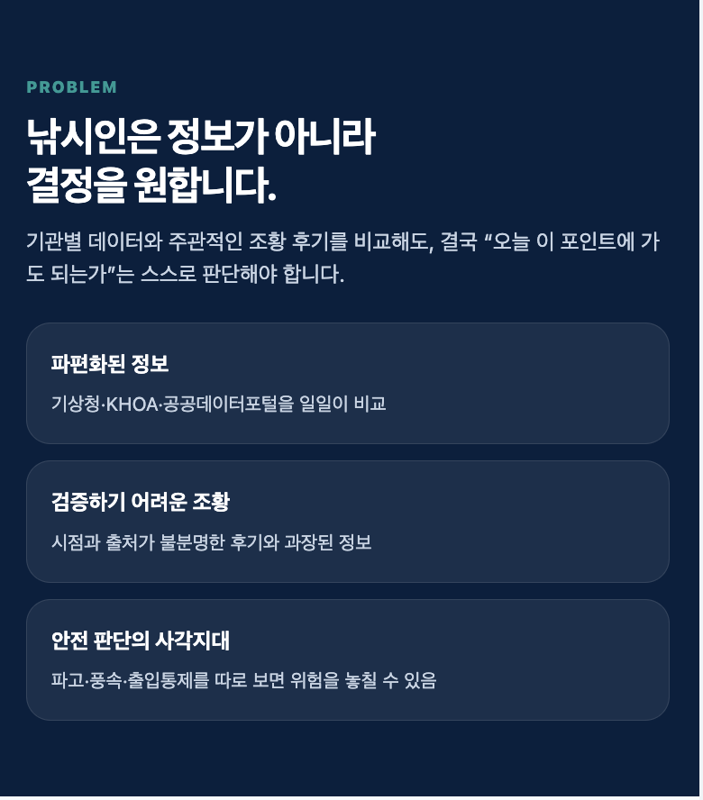

공공데이터를 자동 수집·분석해 포인트별 출조 적합도를 즉답과 채점 근거로 알려주는 출조 결정 서비스입니다. 매주 출조를 계획하는 20~50대 중급 앵글러를 핵심 타깃으로 합니다.
정보는 이미 충분합니다. 부족한 것은 그 정보를 "가도 되는가"라는 결정으로 바꿔주는 마지막 한 걸음입니다.
출조 판단 데이터가 기상청·해양조사원·공공데이터포털 등에 파편화되어 있어 낚시인이 직접 비교해야 합니다. SNS 조황은 주관이 섞여 미검증 상태이고, 범용 AI는 그럴듯한 환각 오답을 내놓기 쉽습니다.
기존 앱들은 숫자만 제공할 뿐, "출조 가능 여부"라는 결정으로 이어주지 못합니다.
지인 낚시인들이 여러 데이터를 비교하고도 결국 감에 의존하다 출조 실패와 위험을 반복해서 겪는 것을 지켜봤습니다.
창업자가 직접 수동 수집 → 무인 스케줄러 → PostgreSQL 적재로 이어지는 데이터 통합 자동화를 구축 완료해, 문제 당사자이자 기술 보유자로서 실행 가능성을 검증했습니다.

역할을 듣기·알기·판정 셋으로 분리해, AI의 그럴듯한 거짓 답변(환각)을 구조적으로 차단합니다.
AI(신경망)는 일상 언어 질문과 조황 후기·사진의 이해·번역만 담당합니다.
포인트별 수심·어종·위험요소, 채비, 물때 등 베테랑 경험 지식을 검증 가능한 지식 DB로 정리합니다.
출조 판정은 검증된 규칙·기상 한계치로 계산합니다. 같은 조건이면 같은 답, 근거·출처를 100% 추적합니다 (Graph RAG).
| 완료 | 코랩 수동 수집 → 자동화 스케줄러 체계 전환 |
| 완료 | 전용 머신·내부망 구성, 공공데이터 PostgreSQL 적재 완성 |
| 완료 | 로컬 Ollama 기반 권역별 출조 RAG — 비용 절감·데이터 보호·환각 차단 |
| 진행 | 생성AI API → 소셜 퍼블리싱 완전 자동화 콘텐츠 팩토리 구축 |
| 진행 | 낚시지식 온톨로지 기반 출조판정 엔진 탑재 |
부산·경남 중급 바다낚시인을 초기 고객으로, 콘텐츠 자동 발행이 만드는 데이터가 다시 서비스 품질을 높이는 구조를 지향합니다.
| 정의 | 부산·경남에서 월 2회 이상 바다낚시, 출조 취소·포인트 실패 비용이 큰 20~50대 |
| 규모 | 전국 바다낚시인 약 100만 명 중 부산·경남 권역 우선 공략 |
| 특성 | 포인트·채비에 대한 근거 있는 답을 요구, 채널 테스트에서 낚시 사용자 유입률 월등히 높음 |